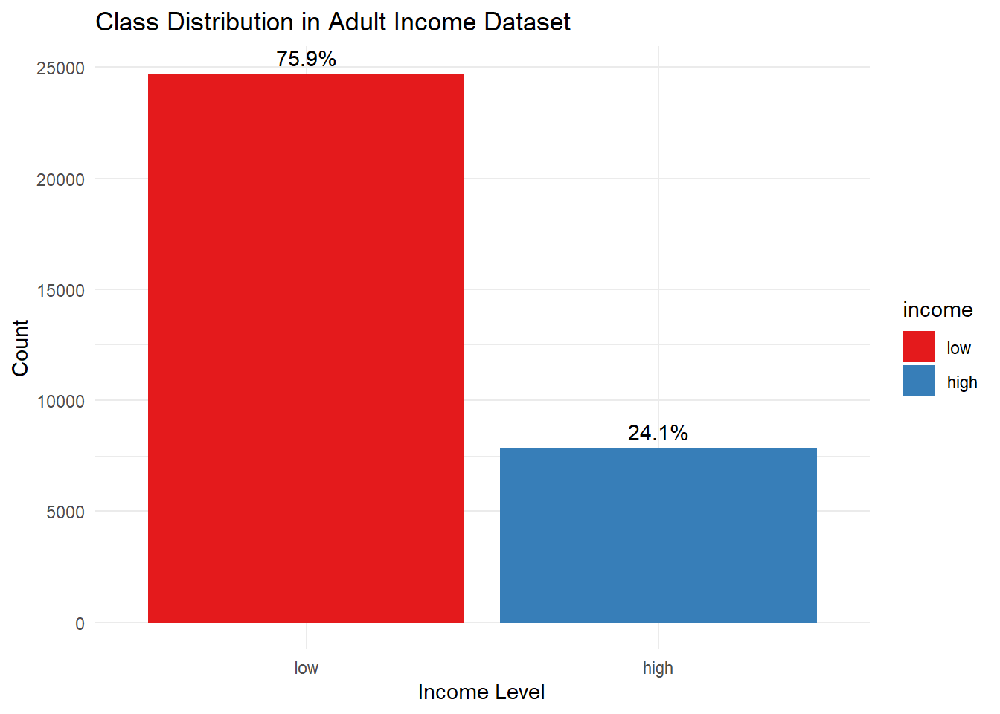

In this chapter, we will explore and process the Adult Income dataset, which will serve as the foundation for our comparison of LIME and SHAP interpretation methods. This dataset is widely used in machine learning research and provides a practical benchmark for classification tasks.
3.1 Dataset Overview
The Adult Income dataset (also known as “Census Income” dataset) was extracted from the 1994 U.S. Census Bureau database. The prediction task is to determine whether a person earns more than $50,000 a year based on census data.
Code
# Loading necessary librarieslibrary(tidyverse) # For data manipulation and visualizationlibrary(caret) # For machine learning workflowslibrary(scales) # For better visualization scaleslibrary(DataExplorer) # For automated EDAlibrary(skimr) # For data summaries
Code
# Loading the Adult dataset# We'll use the UCI Machine Learning Repository versiondata_url <-"https://archive.ics.uci.edu/ml/machine-learning-databases/adult/adult.data"column_names <-c("age", "workclass", "fnlwgt", "education", "education_num", "marital_status", "occupation", "relationship", "race", "sex", "capital_gain", "capital_loss", "hours_per_week", "native_country", "income")adult <-read.csv(data_url, header =FALSE, strip.white =TRUE, col.names = column_names, na.strings =c("?", "", "NA", "N/A"))# Display the first few rowshead(adult)
age workclass fnlwgt education education_num marital_status
1 39 State-gov 77516 Bachelors 13 Never-married
2 50 Self-emp-not-inc 83311 Bachelors 13 Married-civ-spouse
3 38 Private 215646 HS-grad 9 Divorced
4 53 Private 234721 11th 7 Married-civ-spouse
5 28 Private 338409 Bachelors 13 Married-civ-spouse
6 37 Private 284582 Masters 14 Married-civ-spouse
occupation relationship race sex capital_gain capital_loss
1 Adm-clerical Not-in-family White Male 2174 0
2 Exec-managerial Husband White Male 0 0
3 Handlers-cleaners Not-in-family White Male 0 0
4 Handlers-cleaners Husband Black Male 0 0
5 Prof-specialty Wife Black Female 0 0
6 Exec-managerial Wife White Female 0 0
hours_per_week native_country income
1 40 United-States <=50K
2 13 United-States <=50K
3 40 United-States <=50K
4 40 United-States <=50K
5 40 Cuba <=50K
6 40 United-States <=50K
3.2 Dataset Characteristics
The Adult Income dataset includes the following characteristics:
# Class distributionincome_distribution <-table(adult$income)cat("Class distribution:\n")
Class distribution:
Code
print(income_distribution)
<=50K >50K
24720 7841
Code
cat("Percentage of high income (>50K):", percent(income_distribution[2] /sum(income_distribution)), "\n")
Percentage of high income (>50K): 24%
Code
# Quick summary of the datasetskim(adult)
Data summary
Name
adult
Number of rows
32561
Number of columns
15
_______________________
Column type frequency:
character
9
numeric
6
________________________
Group variables
None
Variable type: character
skim_variable
n_missing
complete_rate
min
max
empty
n_unique
whitespace
workclass
1836
0.94
7
16
0
8
0
education
0
1.00
3
12
0
16
0
marital_status
0
1.00
7
21
0
7
0
occupation
1843
0.94
5
17
0
14
0
relationship
0
1.00
4
14
0
6
0
race
0
1.00
5
18
0
5
0
sex
0
1.00
4
6
0
2
0
native_country
583
0.98
4
26
0
41
0
income
0
1.00
4
5
0
2
0
Variable type: numeric
skim_variable
n_missing
complete_rate
mean
sd
p0
p25
p50
p75
p100
hist
age
0
1
38.58
13.64
17
28
37
48
90
▇▇▅▂▁
fnlwgt
0
1
189778.37
105549.98
12285
117827
178356
237051
1484705
▇▁▁▁▁
education_num
0
1
10.08
2.57
1
9
10
12
16
▁▁▇▃▁
capital_gain
0
1
1077.65
7385.29
0
0
0
0
99999
▇▁▁▁▁
capital_loss
0
1
87.30
402.96
0
0
0
0
4356
▇▁▁▁▁
hours_per_week
0
1
40.44
12.35
1
40
40
45
99
▁▇▃▁▁
The dataset contains approximately 32,000 instances with 14 features (predictors) and 1 target variable (income). The class distribution shows an imbalance, with a higher proportion of individuals earning less than $50,000 per year.
3.3 Feature Analysis
Let’s examine the features in more detail:
Code
# Categorical featurescat_features <-names(adult)[sapply(adult, is.factor) |sapply(adult, is.character)]if (length(cat_features) ==0) {# Convert character columns to factors if none are already factorsfor (col innames(adult)[sapply(adult, is.character)]) { adult[[col]] <-as.factor(adult[[col]]) } cat_features <-names(adult)[sapply(adult, is.factor)]}# Numeric featuresnum_features <-names(adult)[sapply(adult, is.numeric)]# Summary of categorical featurescat("Categorical features:", length(cat_features), "\n")
Columns with missing values:
workclass occupation native_country
1836 1843 583
3.4 Data Preprocessing
We’ll now preprocess the data to make it suitable for our machine learning models:
Code
# Create a copy of the dataset for preprocessingadult_processed <- adult# Handle missing valuesif (sum(is.na(adult)) >0) {# For categorical features, replace NA with the most frequent categoryfor (col in cat_features) {if (sum(is.na(adult_processed[[col]])) >0) { most_frequent <-names(sort(table(adult_processed[[col]]), decreasing =TRUE))[1] adult_processed[[col]][is.na(adult_processed[[col]])] <- most_frequentcat("Replaced NAs in", col, "with", most_frequent, "\n") } }# For numeric features, replace NA with the medianfor (col in num_features) {if (sum(is.na(adult_processed[[col]])) >0) { median_val <-median(adult_processed[[col]], na.rm =TRUE) adult_processed[[col]][is.na(adult_processed[[col]])] <- median_valcat("Replaced NAs in", col, "with median:", median_val, "\n") } }}
Replaced NAs in workclass with Private
Replaced NAs in occupation with Prof-specialty
Replaced NAs in native_country with United-States
Code
# Convert the target variable to a factor if it's not alreadyadult_processed$income <-factor(adult_processed$income, levels =c("<=50K", ">50K"), labels =c("low", "high"))# Encode categorical variables# We'll use one-hot encoding for our modelsdummy_vars <-dummyVars(~ ., data =select(adult_processed, all_of(cat_features)), fullRank =TRUE)categorical_encoded <-predict(dummy_vars, select(adult_processed, all_of(cat_features)))saveRDS(dummy_vars, file ="data/dummy_encoder.rds")# Combine with numeric variablesadult_encoded <-cbind(select(adult_processed, all_of(num_features)), as.data.frame(categorical_encoded),income = adult_processed$income)# Check the final preprocessed datasetcat("Preprocessed dataset dimensions:", dim(adult_encoded)[1], "rows and", dim(adult_encoded)[2], "columns\n")
Preprocessed dataset dimensions: 32561 rows and 99 columns
3.5 Feature Importance Visualization
Before we build our models, let’s visualize the relationship between features and the target variable:
Code
# For numeric featuresif (length(num_features) >0) { adult_long <- adult_processed %>%select(all_of(c(num_features, "income"))) %>%pivot_longer(cols =all_of(num_features), names_to ="feature", values_to ="value")ggplot(adult_long, aes(x = value, fill = income)) +geom_density(alpha =0.5) +facet_wrap(~ feature, scales ="free") +theme_minimal() +labs(title ="Distribution of Numeric Features by Income Level",x ="Value", y ="Density") +scale_fill_brewer(palette ="Set1")}
Code
# For categorical features (selecting a few important ones to avoid overcrowding)important_cat_features <-c("education", "marital_status", "occupation", "relationship")important_cat_features <-intersect(important_cat_features, cat_features)if (length(important_cat_features) >0) {for (feature in important_cat_features) { p <-ggplot(adult_processed, aes_string(x = feature, fill ="income")) +geom_bar(position ="fill") +theme_minimal() +theme(axis.text.x =element_text(angle =45, hjust =1)) +labs(title =paste("Income Distribution by", feature),y ="Proportion", x = feature) +scale_fill_brewer(palette ="Set1")print(p) }}
3.6 Strict Train-Test Split with CSV Export
To ensure there’s no data leakage, we’ll implement a strict train-test split strategy and save the datasets as separate CSV files:
Code
# Set seed for reproducibilityrandom_seed <-9876set.seed(random_seed)cat("Random seed used:", random_seed, "\n")
Random seed used: 9876
Code
# Perform stratified sampling to maintain class distributiontrain_indices <-createDataPartition(adult_encoded$income, p =0.7, list =FALSE, times =1) # Only create one split# Create training and testing setstrain_data <- adult_encoded[train_indices, ]test_data <- adult_encoded[-train_indices, ]# Verify there's no overlap between training and testing setscat("Number of overlapping rows between train and test sets:", sum(rownames(train_data) %in%rownames(test_data)), "(should be 0)\n")
Number of overlapping rows between train and test sets: 0 (should be 0)
Code
# Check class distribution in train and test setscat("Training set class distribution:\n")
Training set class distribution:
Code
print(table(train_data$income))
low high
17304 5489
Code
cat("Training set class percentages:\n")
Training set class percentages:
Code
print(prop.table(table(train_data$income)))
low high
0.7591805 0.2408195
Code
cat("\nTest set class distribution:\n")
Test set class distribution:
Code
print(table(test_data$income))
low high
7416 2352
Code
cat("Test set class percentages:\n")
Test set class percentages:
Code
print(prop.table(table(test_data$income)))
low high
0.7592138 0.2407862
Code
# Verify dimensions of splitscat("\nTraining set dimensions:", dim(train_data)[1], "rows and", dim(train_data)[2], "columns\n")
Training set dimensions: 22793 rows and 99 columns
Code
cat("Testing set dimensions:", dim(test_data)[1], "rows and", dim(test_data)[2], "columns\n")
Testing set dimensions: 9768 rows and 99 columns
Code
# Create data directory if it doesn't existif (!dir.exists("data")) {dir.create("data")}# Save training and test sets as CSV fileswrite.csv(train_data, file ="data/adult_train.csv", row.names =FALSE)write.csv(test_data, file ="data/adult_test.csv", row.names =FALSE)# Save random seed information for referenceseed_info <-data.frame(seed = random_seed)write.csv(seed_info, file ="data/random_seed.csv", row.names =FALSE)cat("Training and test sets have been saved as separate CSV files.\n")
Training and test sets have been saved as separate CSV files.
Code
cat("Random seed information has been saved as a CSV file.\n")
Random seed information has been saved as a CSV file.
3.7 Class Imbalance
The Adult Income dataset exhibits class imbalance, with significantly fewer instances of high income (>$50K) compared to low income (≤$50K). This imbalance can bias machine learning models toward the majority class. Let’s visualize this imbalance and create a balanced training set:
Code
# Visualize class imbalanceggplot(adult_processed, aes(x = income, fill = income)) +geom_bar() +theme_minimal() +labs(title ="Class Distribution in Adult Income Dataset",x ="Income Level", y ="Count") +scale_fill_brewer(palette ="Set1") +geom_text(stat ='count', aes(label =paste0(round(..count../nrow(adult_processed)*100, 1), "%")), vjust =-0.5)

3.7.1 Creating a Balanced Training Set
For better model performance, especially with neural networks, we’ll create a balanced training dataset:
# Create balanced sampleset.seed(random_seed) # Use the same random seedlow_indices <-which(train_data$income =="low")high_indices <-which(train_data$income =="high")# Undersample the majority classn_minority <-length(high_indices)sampled_low_indices <-sample(low_indices, n_minority)# Create balanced datasetbalanced_indices <-c(sampled_low_indices, high_indices)balanced_train_data <- train_data[balanced_indices, ]# Verify class distribution in balanced datasetcat("Balanced training set class distribution:\n")
Balanced training set class distribution:
Code
print(table(balanced_train_data$income))
low high
5489 5489
Code
# Save balanced training set as CSVwrite.csv(balanced_train_data, file ="data/adult_train_balanced.csv", row.names =FALSE)cat("Balanced training set has been saved as a CSV file.\n")
Balanced training set has been saved as a CSV file.
3.8 Data Validation
To ensure our data processing pipeline is robust, we’ll perform some additional validation checks:
Code
# Check if the two classes in the balanced training set are equalbalanced_class_counts <-table(balanced_train_data$income)cat("Class counts in balanced training set:", balanced_class_counts[1], "vs", balanced_class_counts[2], "\n")
Class counts in balanced training set: 5489 vs 5489
Code
cat("Class ratio (low:high):", balanced_class_counts[1]/balanced_class_counts[2], "\n")
Class ratio (low:high): 1
Code
# Verify feature column name consistency across all datasetscat("\nFeature column name consistency check:\n")
Feature column name consistency check:
Code
cat("Training set columns:", ncol(train_data), "\n")
Training set columns: 99
Code
cat("Testing set columns:", ncol(test_data), "\n")
Testing set columns: 99
Code
cat("Balanced training set columns:", ncol(balanced_train_data), "\n")
Balanced training set columns: 99
Code
# Check for NA values in each datasetcat("\nNA values check:\n")
NA values check:
Code
cat("Total NAs in training set:", sum(is.na(train_data)), "\n")
Total NAs in training set: 0
Code
cat("Total NAs in test set:", sum(is.na(test_data)), "\n")
Total NAs in test set: 0
Code
cat("Total NAs in balanced training set:", sum(is.na(balanced_train_data)), "\n")
Total NAs in balanced training set: 0
Code
# Check feature value rangescat("\nNumeric feature range check (train vs test):\n")
age - Train range: 17 to 90 | Test range: 17 to 90
fnlwgt - Train range: 12285 to 1455435 | Test range: 18827 to 1484705
education_num - Train range: 1 to 16 | Test range: 1 to 16
capital_gain - Train range: 0 to 99999 | Test range: 0 to 99999
capital_loss - Train range: 0 to 4356 | Test range: 0 to 3900
hours_per_week - Train range: 1 to 99 | Test range: 1 to 99
3.9 Summary
In this chapter, we’ve:
Loaded and explored the Adult Income dataset
Identified and analyzed its key features
Preprocessed the data by handling missing values and encoding categorical variables
Visualized important relationships between features and income levels
Implemented a strict train-test split strategy with CSV exports to prevent data leakage
Created a balanced training dataset to address class imbalance concerns
Performed additional data validation checks to ensure robust data processing
The preprocessed data is now saved as CSV files, ready for model building and the application of interpretability methods, which we’ll explore in the next chapter. This approach ensures clear separation between training and testing data, helping to prevent data leakage issues.